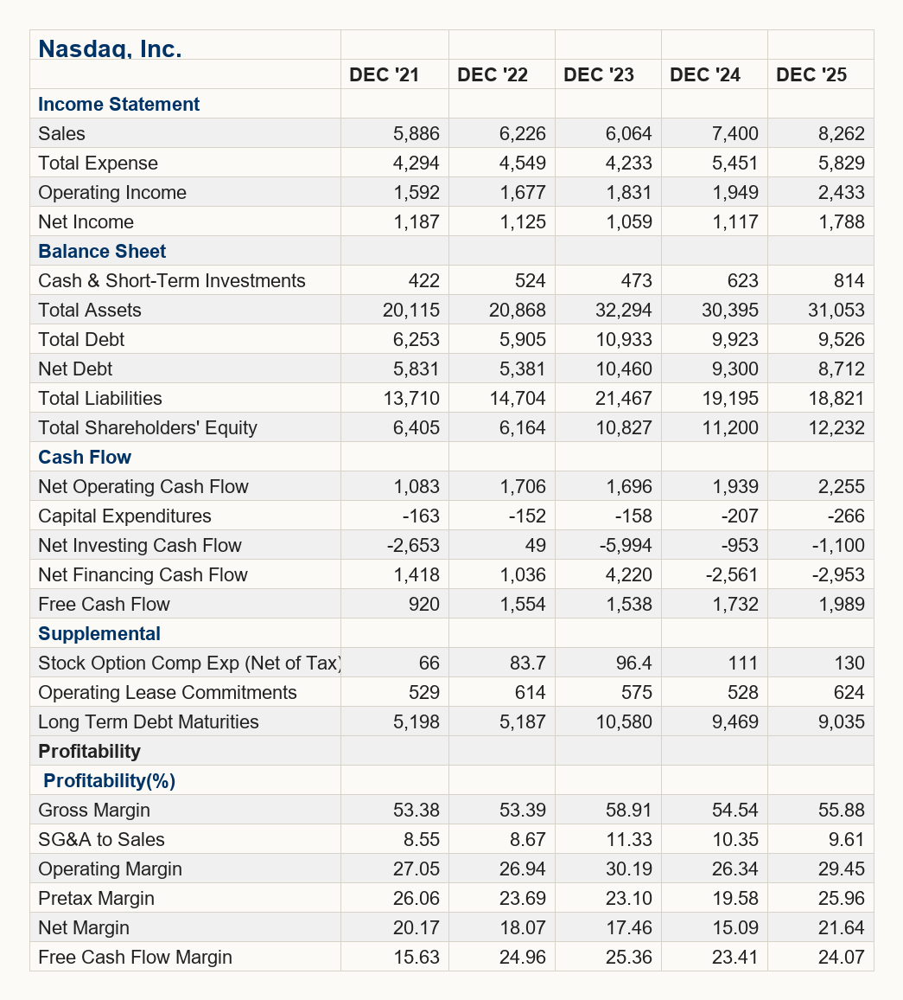
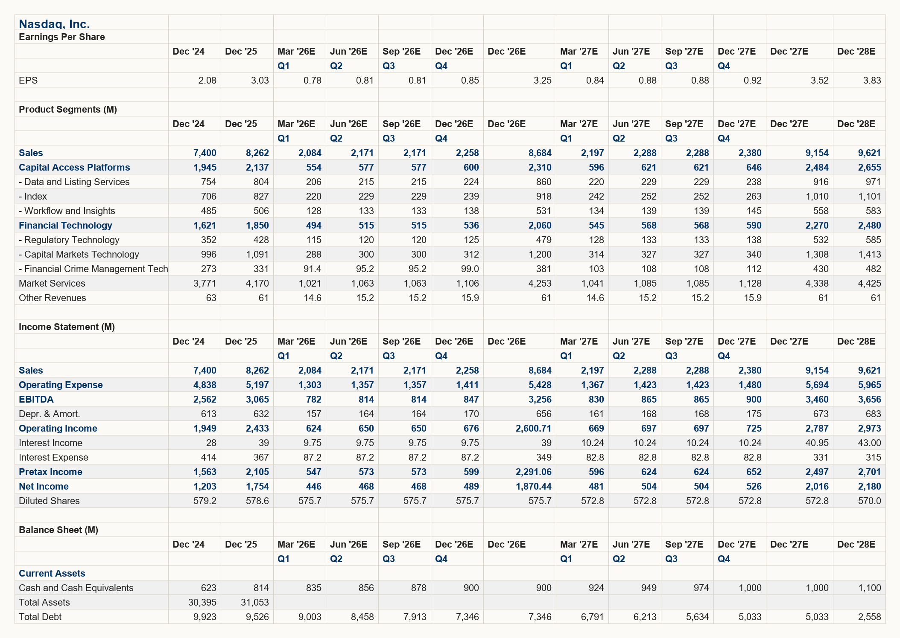
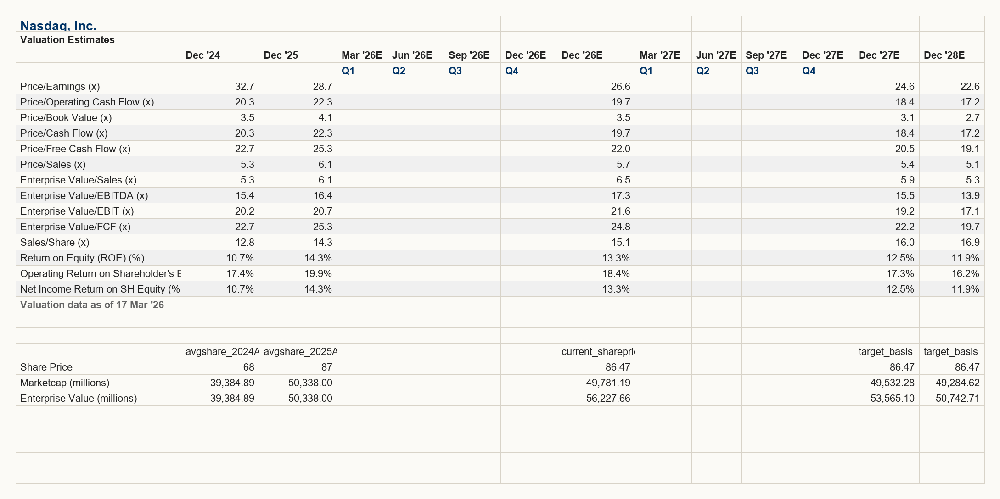

Nasdaq Valuation Model
Public-company valuation model and written memo.
Illustrative public-company valuation model for Nasdaq, Inc. (NDAQ), built from historical financial statements, segment-level forecast drivers, leverage schedules, free cash flow projections, and forward trading multiple analysis. The project pairs an Excel model with a written valuation memo so readers can review both the mechanics of the forecast and the investment-style narrative behind the outputs.
Illustrative public-company valuation model; no investment advice
Model Notes
- Built historical financial statement summary, profitability ratios, leverage metrics, per-share outputs, and trading multiples for Nasdaq.
- Forecasts product-segment revenue drivers across Capital Access Platforms, Financial Technology, Market Services, and other revenue.
- Projects EBITDA, operating income, net income, free cash flow, net debt, and deleveraging from 2026E to 2028E.
- Includes forward P/E, EV/Sales, EV/EBITDA, EV/EBIT, EV/FCF, ROE, and share-price/enterprise-value bridge outputs.
- Provides written memo commentary tying growth, margin expansion, free cash flow, leverage reduction, and valuation multiples into a concise public-company valuation view.
Memo
Screenshots


